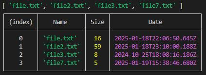

Node.js. Файлова система node.js
Найбільш використовувані функції:
- Читання файлу -
fs.readFile(filename, [options]) - Запис/створення файлу -
fs.writeFile(filename, data, [options]) - Додавання у файл -
fs.appendFile(filename, data, [options]) - Перейменування файлу -
fs.rename(oldPath, newPath) - Видалення файлу -
fs.unlink(path) - Масив файлів у папці -
fs.readdir(path.join(__dirname, "/files"))
const path = require("path");– статичний шляхpath.join(__dirname, "files/file.txt");- path.extname(path) розширення файлу
- path.basename(path[, suffix])
Богдан Лямзін
Рекомендє без try/catch та then/catch, бо воно і так ловить помилки
const readFile = async() => {
const textFile = await fs.readFile("./files/file2.txt", "utf-8");
console.log(textFile); // zxcv
}
readFile();
Варіант 1. Через колбеки
const fs = require("fs"); або
const fs = require("node:fs");
readFile(). bufer
fs.readFile("./files/file.txt", (err, res) => {
if(err) throw err;
const bufer = res;
console.log(bufer);
const textFile = bufer.toString();
console.log(textFile);
});
readFile(). "utf-8"
fs.readFile("./files/file.txt", {encoding: "utf-8"}, (err, res) => {
if(err) throw err;
const data = res;
console.log(data);
});
writeFile()
const myText = "\nYupiter: 0123456789";
fs.writeFile("./files/file2.txt", myText, {encoding: "utf-8"}, (err, res) => {
if(err) throw err;
console.log("file writen!");
});
Варіант 2. Через проміси
const fs = require("node:fs/promises"); або
const fs = require("node:fs").promises;
readFile(). "utf-8"
const fs = require("node:fs");
fs.promises.readFile("./files/file.txt", "utf-8")
.then(data => console.log(data))
.catch(err => console.log(err));
або
const fs = require("node:fs/promises"); або
const fs = require("node:fs").promises;
fs.readFile("./files/file.txt", "utf-8")
.then(data => console.log(data))
.catch(err => console.log(err));
Варіант 3. Через проміси async/await
readFile()
const fs = require("node:fs/promises"); або
async function readMyFile() {
const data = await fs.readFile("./files/file.txt", "utf-8");
return data;
}
readMyFile()
.then(data => console.log(data))
.catch(err => console.log(err));
writeFile()
const myText = "\nYupiter: 0123456789";
fs.writeFile("./files/file2.txt", myText, {encoding: "utf-8"})
.then(() => console.log("file writen!"))
.catch(err => console.log(err));
ApendFile()
const myText = "\nYupiter: 0123456789";
fs.appendFile("./files/file2.txt", myText, {encoding: "utf-8"})
.then(() => console.log("file writen!"))
.catch(err => console.log(err));
Перейменування файлу
async function renameFile() {
try{
await fs.rename("./files/file6.txt", "./files/file7.txt");
console.log("Rename cuccesful!");
}
catch {
throw err;
}
}
renameFile();
or
async function renameFile() {
await fs.rename("./files/file6.txt", "./files/file7.txt");
console.log("Rename cuccesful!");
}
renameFile();
Видалення файлу
V1
fs.unlink("./files/file5.txt")
.then(() => console.log("Delete cuccesful!"))
.catch(err => console.log(err));
V2 function async/await
async function delFile() {
await fs.unlink("./files/file4.txt");
}
delFile()
.then(() => console.log("Delete cuccesful!"))
.catch(err => console.log(err))
V3 function try/catch
async function delFile() {
try{
await fs.unlink("./files/file4.txt");
console.log("Delete cuccesful!");
}
catch {
throw err;
}
}
delFile();
створення папки
async function makeDirectory() {
// const projectFolder = join(__dirname, 'test', 'project');
const dirCreation = await fs.mkdir("./files/folder2", { recursive: true });
console.log(dirCreation);
// return dirCreation;
}
makeDirectory().catch(console.error);
видалення папки
async function dellDirectory() {
await fs.rmdir("./files/folder2");
console.log("Delete cuccesful!");
}
dellDirectory().catch(console.error);
scaning folder
Нижче функця робить масив файлів у папці
async function scanFiles() {
const dataArr = await fs.readdir(path.join(__dirname, "/files"));
console.log(dataArr);
// return data;
}
scanFiles();
Нижче функця сканує файли у папці
async function scanFiles2() {
const dataArr = await fs.readdir(path.join(__dirname, "/files"));
return Promise.all(
dataArr.map(async filename => {
const stats = await fs.stat(`./files/${filename}`);
return {
Name: filename,
Size: stats.size,
Date: stats.mtime,
}
})
);
}
scanFiles2()
.then(result => console.table(result))
.catch(err => console.table(err));

Функція що створює 10 файлів gpt chat
const fs = require('fs');
const path = require('path');
function createFiles() {
for (let i = 1; i <= 10; i++) {
// Форматування імені файлу (B01, B02, ..., B10)
const fileName = `B${String(i).padStart(2, '0')}.txt`;
// Отримання повного шляху до файлу
const filePath = path.join(__dirname, fileName);
// Створення порожнього файлу
fs.writeFileSync(filePath, '', 'utf8');
console.log(`Файл створено: ${fileName}`);
}
}
createFiles();
ISON - примітки
Перевіряємо JSON дані на валідаторі
Один з варіантів запису JSON файлу:
fs.writeFile("file.json", JSON.stringify(data), (err)=> {
if(err) console.log(err);
});
Читаємо JSON файл. Варіант 1
fs.readFile("path", "utf-8", callback);
Читаємо JSON файл. Варіант 2
const jsonData = require("./path/file.json")
Якщо в шляху не вказати "./" то воно буде шукати в папці "node_modules"
Робота з CSV файлами
В такому файлі дані зберігаються структуровано та розділяються якимось символом
Зчитаємо csv файл
- npm install csv-parser
- or: yarn add csv-parser
- example:
-
const csv = require('csv-parser'); const fs = require('fs'); const results = []; const path = require("path"); const pathFileCsv = path.join(__dirname, "fileFolder", "made.csv"); // === Прочитать csv файл ==== fs.createReadStream(pathFileCsv) .pipe(csv()) // Параметри розделителя. (запятая) .on('data', (data) => results.push(data)) .on('end', () => { console.log(results); });
Записати csv файл
- npm i csv-writer
- example:
-
const students = [ {user: "Petr", age: "34", range: 10}, {user: "Pit", age: "14", range: 3}, {user: "Bred", age: "44", range: 20}, {user: "Serg", age: "46", range: 55}, ]; const createCsvWriter = require('csv-writer').createObjectCsvWriter; const csvWriter = createCsvWriter({ path: './src/fileFolder/file.csv', header: [ {id: 'user', title: 'User'}, {id: 'age', title: 'Age'}, {id: 'range', title: 'Range'} ] }); csvWriter.writeRecords(students) // returns a promise .then(() => { console.log('...Done'); });